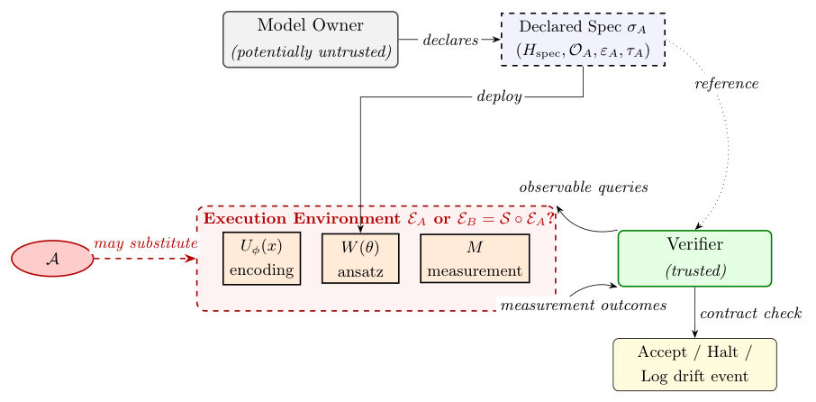
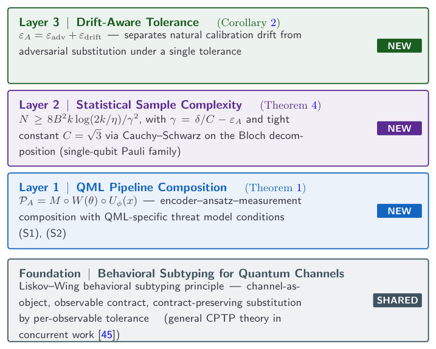
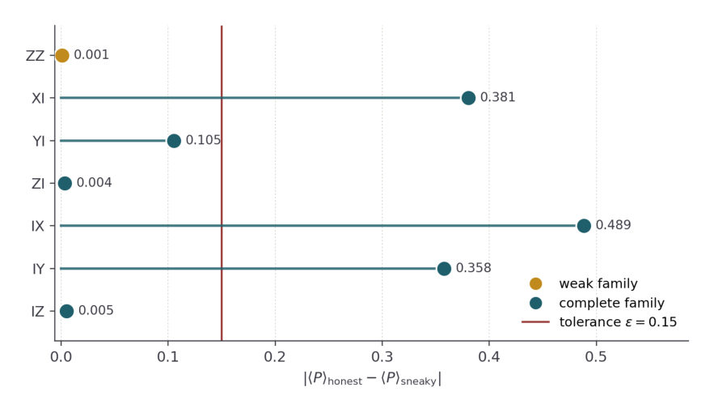
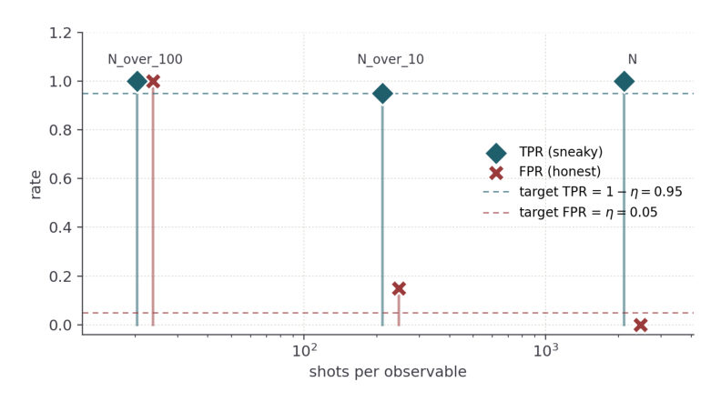
← Index · ← Previous · Next →
Authors: Chakir Fikri
Type: theory · Category: quantum information and computing · PDF: https://arxiv.org/pdf/2605.24994v1
Analysis basis: full PDF text, analyzed in chunks
Topic relevance: 🔥 quantum measurements 4/5 · entanglement & information structure 2/5
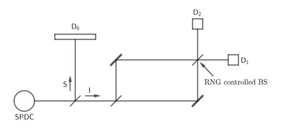
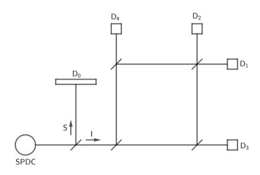
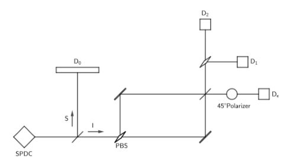
Summary. This paper demonstrates that the seemingly paradoxical correlations in delayed-choice quantum eraser experiments are actually a result of incompatible structural assumptions. It proves that any realistic implementation must necessarily involve losses, non-deterministic routing, or coarse-graining to remain consistent with the independence of the measurement choice.
Why it may be interesting. It provides a fundamental structural explanation for the 'paradoxical' nature of DCQE, showing that losses are not just experimental flaws but a structural necessity to maintain causality and independence.
Main problem. The paper addresses the apparent paradox in Delayed-Choice Quantum Eraser (DCQE) experiments, where measurement choices at a later time seem to correlate with earlier detection events.
Main result. The author proves a no-go theorem stating that four intuitive properties of idealized DCQE architectures—independence of choice, absence of losses, deterministic routing, and distinct conditional distributions—are mutually incompatible.
Method. A purely probabilistic analysis using elementary probability constraints and a framework of minimal compatibility relations between random variables, independent of specific quantum dynamics.
Model / system. A generic bipartite DCQE scenario involving a signal system (S) and an idler system (I), modeled via random variables for detection outcomes, experimental choices, and density operators.
Key observables. Detection positions (X), experimental settings (C), coincidence counts, and conditional detection distributions P(X|D).
Important parameters / regimes. Loss rate (p), probability of erasure choice (q), and the minimum loss rate threshold p_min = q^2/2.
Assumptions / limitations. The core derivation relies on the assumption of statistical independence between the choice and the signal detection (X is independent of C).
Figures summary. Figure 1 illustrates Architecture I (coarse-graining leading to interference cancellation); Figure 2 illustrates Architecture II (non-deterministic routing in a Mach-Zehnder setup).
Paper structure. The paper introduces the DCQE paradox, defines a probabilistic model for the system, presents a no-go theorem for idealized architectures, classifies DCQE schemes into three types based on which property they violate, and provides an analytical derivation of loss rate constraints.
Delayed-choice quantum eraser (DCQE) experiments are often presented as challenging classical causal intuitions by correlating detection events with choices implemented at later times. While it is well understood that post-selection plays a crucial role in producing the observed interference patterns, the structural features underlying such correlations are rarely analyzed within a unified framework. In this work, we introduce a simple probabilistic constraint applicable to idealized DCQE architectures. We show that four intuitive properties -- statistical independence of the choice, absence of losses, deterministic routing conditioned on the choice, and distinct conditional detection distributions -- cannot be simultaneously satisfied. This incompatibility provides a transparent classification of DCQE schemes and clarifies how conditional interference patterns arise without invoking exotic mechanisms.
Authors: Xiongzhi Zeng, Ming Gong, Bowen Kan, Yi Fan, Huan Ma, Jianbin Cai, Yancheng Liu, Naibin Zhou, Tao Jiang, Shaojun Guo, Zhijie Fan, Zongkang Zhang, Yuan Li, Sirui Cao, Kai Yan, Xiaobo Zhu, Yi Luo, Honghui Shang, Zhenyu Li, Jian-Wei Pan, Jinlong Yang
Type: both · Category: quantum information and computing · PDF: https://arxiv.org/pdf/2605.24617v1
Analysis basis: full PDF text, analyzed in chunks
Topic relevance: 🔥 QC/QI experiment 4/5 · entanglement & information structure 2/5
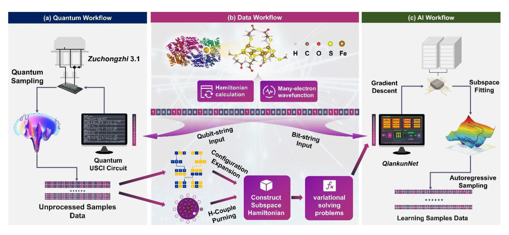
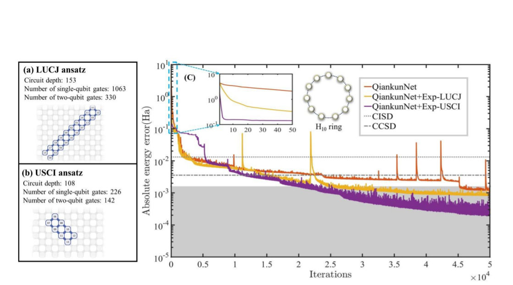
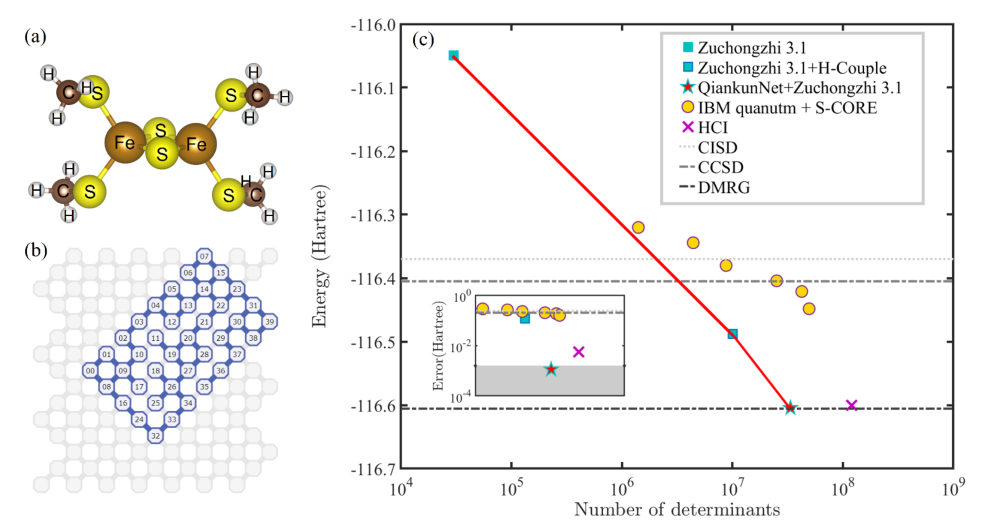
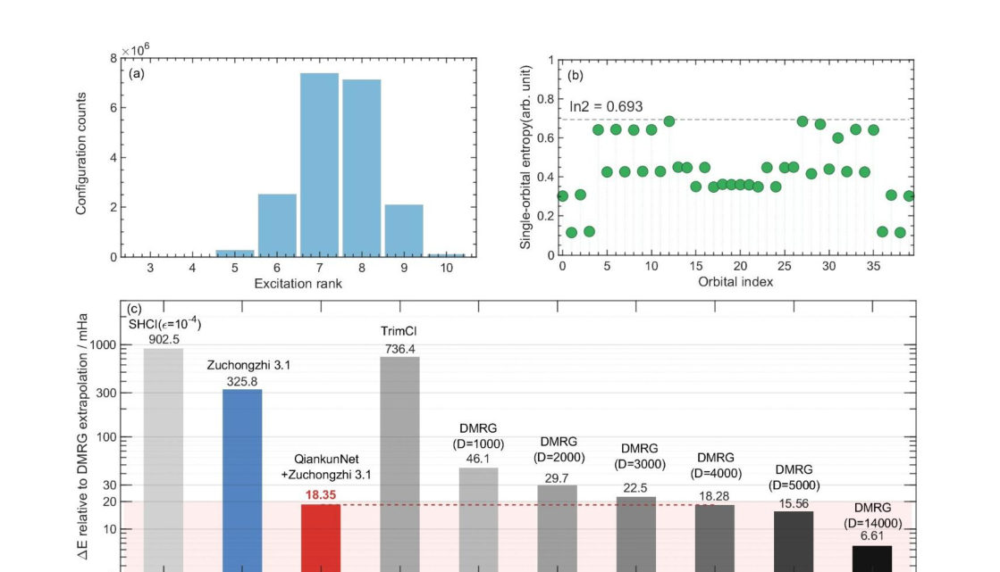
Summary. This paper presents a hybrid quantum-classical framework that uses a quantum processor to sample important electronic configurations and a Transformer neural network to refine the resulting wavefunction. It successfully demonstrates high-accuracy simulations of large, strongly correlated biological clusters that are challenging for classical computers.
Why it may be interesting. It demonstrates a powerful synergy between quantum hardware-native sampling and classical machine learning to overcome the limitations of NISQ noise and the exponential scaling of many-body wavefunctions.
Main problem. Accurately simulating strongly correlated electronic structures on NISQ-era quantum hardware, which is hindered by noise, high measurement costs, and the exponential growth of the Hilbert space.
Main result. The QiankunNet-QSCI framework achieves chemical accuracy for a 40-qubit ferredoxin cluster and reaches 12-18 milli-Hartree agreement with DMRG for a massive 146-spin-orbital nitrogenase P-cluster.
Method. A hybrid quantum-classical approach using a Unitary Selected Configuration Interaction (USCI) ansatz for importance sampling on a quantum processor, followed by a Transformer-based neural network (QiankunNet) for denoising and wavefunction refinement.
Model / system. The study utilizes the Zuchongzhi 3.1 superconducting quantum processor to simulate various systems, including the H10 ring, the [2Fe-2S] ferredoxin active center, and the large-scale nitrogenase P-cluster (CAS(114e, 73o) active space).
Key observables. Ground-state energy, absolute energy error, excitation rank, single-orbital entropy, mutual information, and sampling enrichment factor.
Important parameters / regimes. Gate error rates (single-qubit ~0.1%, two-qubit ~0.6%), readout error (~0.6%), and the number of shots (up to 10^8).
Assumptions / limitations. The framework assumes a global depolarizing noise model and focuses on the importance of the chemically significant determinant sector.
Figures summary. Figure 1 shows the workflow stages (Quantum, Data, AI); Figure 2 validates the H10 ring; Figure 4c compares energy errors against classical methods and DMRG; supplementary figures show hardware metrics, circuit depths, and sampling distributions.
Paper structure. The paper introduces the scientific challenge, details the USCI quantum sampling and QiankunNet Transformer architecture, presents experimental implementation on Zuchongzhi 3.1, demonstrates scalability through various molecular benchmarks, and concludes with error analysis and future outlook.
Although quantum computing offers a promising solution for strongly correlated system simulation, existing algorithms face significant bottlenecks on current noisy intermediate-scale quantum (NISQ) devices. Here, we introduce QiankunNet-QSCI, a hybrid quantum-classical framework that addresses this challenge by combining efficient quantum-sampling with a transformer neural network. An efficient unitary selected configuration Interaction (USCI) ansatz especially designed for quantum sampling is proposed to identify the most chemically significant electronic configurations on the Zuchongzhi 3.1 quantum processor. Subsequently, the transformer model QiankunNet learns from these sparse yet critical quantum data to infer and reconstruct the complete electronic wavefunction with high fidelity. Simulation of the challenging 40-qubit [2Fe-2S] ferredoxin active center achieves chemical accuracy. Simulation of the nitrogenase P-cluster in a 114-electron 73-orbital active space also reaches 12 milli-Hartree-level agreement with the best density matrix renormalization group (DMRG) result. QiankunNet-QSCI thus offers a practical route to accurate quantum-assisted electronic structure calculations on current devices.
Authors: Esra Yeniaras
Type: both · Category: quantum information and computing · PDF: https://arxiv.org/pdf/2605.25066v1
Analysis basis: full PDF text, analyzed in chunks
Topic relevance: 🔥 QC/QI experiment 4/5 · quantum measurements 1/5




Summary. This paper introduces a framework to verify that a quantum machine learning pipeline is executing the intended circuit rather than a substituted or degraded version. It provides a unified way to monitor for both malicious attacks and natural hardware noise using a lightweight measurement protocol. This is crucial for the secure deployment of QML in regulated cloud-based quantum services.
Why it may be interesting. not directly relevant
Main problem. Ensuring the integrity of Quantum Machine Learning (QML) pipelines against both adversarial channel substitution and natural hardware calibration drift.
Main result. The QML-PipeGuard framework successfully detects 'sneaky' channel substitutions on IBM Heron hardware while distinguishing them from benign hardware drift within a calibrated tolerance.
Method. A contract-based framework using behavioral fingerprinting, where a vector of observable expectation values is compared against a declared specification using a predefined tolerance.
Model / system. The study focuses on QML pipelines (VQC, QSVM, QNN) implemented on the IBM Heron r2 processor (ibm_fez), modeling the quantum stage as a sequence of CPTP channels.
Key observables. A vector of observable expectation values, specifically using Pauli observable families (local Pauli, diagonal correlations, and full Pauli strings).
Important parameters / regimes. Calibrated tolerance (epsilon_A), adversarial separation (delta), frame-bound constant (C), and measurement shot budget (N).
Assumptions / limitations. Assumes the adversary controls the execution environment, the QML model is already trained, and the verifier possesses a trusted reference implementation.
Figures summary. Figure 1 shows the system model of trust between owner, environment, and verifier; Figure 4 visualizes the relationship between shot budget and error rates (TPR/FPR).
Paper structure. The paper introduces a threat model for QML integrity, proposes the QML-PipeGuard framework, provides mathematical theorems for detection and sample complexity, and validates the approach via hardware experiments on IBM processors.
Quantum machine learning (QML) is moving from research prototypes to deployed cloud services. As QML enters regulated industries, the integrity of the quantum stage becomes a practical concern on two fronts: noisy hardware drifts at the channel level between recalibrations, and an adversary with control over the execution environment can substitute the declared quantum channel with a behaviorally similar but mathematically distinct one. Neither concern is covered by existing QML verification work on pulse-level noise, input drift, input-perturbation robustness, or device identity. We introduce QML-PipeGuard, a contract-based framework addressing both concerns under a single mathematical machinery. It characterizes a QML pipeline at runtime by its behavioral fingerprint, the vector of observable expectation values under a tomographically structured measurement family, and operates in two modes: drift-aware monitoring that absorbs benign calibration changes within a calibrated tolerance, and adversarial detection that catches channel substitution as a violation of an informationally complete observable contract. The framework contributes a pipeline-composition treatment of the encoder-ansatz-measurement channel with a QML-specific threat model (tight frame-bound C=sqrt(3) for the single-qubit Pauli family), a finite-shot sample-complexity bound, and a tolerance decomposition separating adversarial and natural-drift contributions. We validate the framework end-to-end on a two-qubit QSVM pipeline on the IBM Heron r2 processor (ibm_fez), with a sample-complexity validation on a noise-matched simulator. The prescribed measurement budget (about 1.4e4 shots) fits in a single batched job, the sneaky channel is detected with a wide safety margin while evading the weak contract, and the typical hardware drift sits within tolerance.
Authors: Philipp Nikolas Mayer, Ho Yun
Type: theory · Category: quantum information and computing · PDF: https://arxiv.org/pdf/2605.25146v1
Analysis basis: full PDF text, analyzed in chunks
Topic relevance: 🔥 quantum measurements 4/5
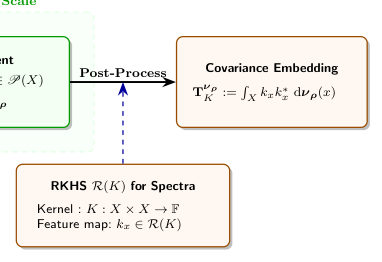
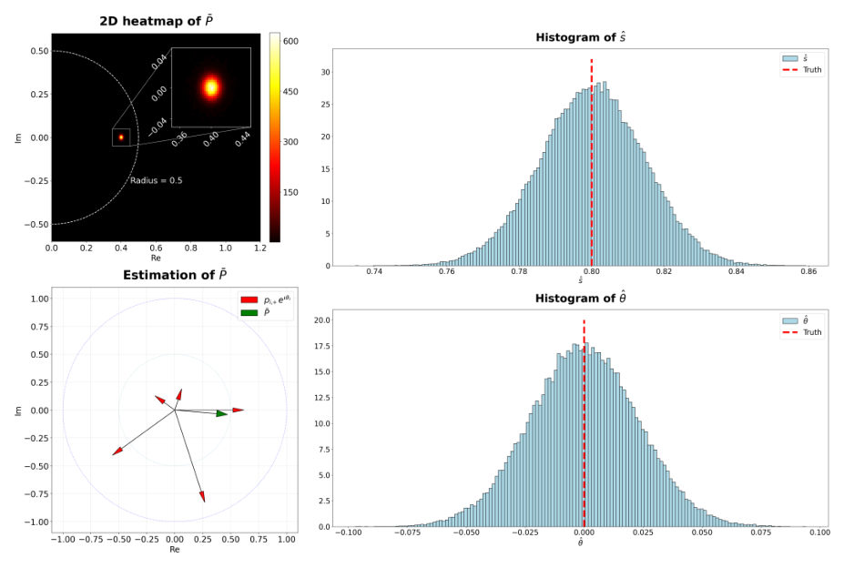
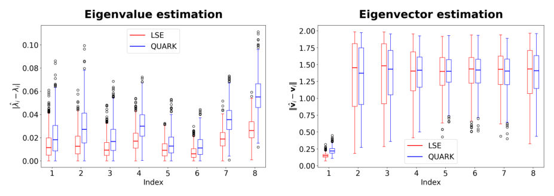
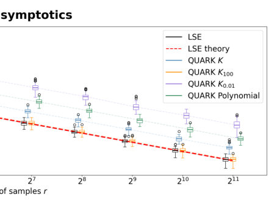
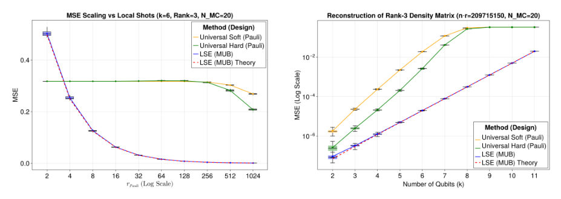
Summary. This paper develops a new kernel-based framework for quantum state tomography that avoids the need for sparsity assumptions. By embedding measurements into a Reproducing Kernel Hilbert Space, the authors create a method that is statistically optimal and accounts for the physical geometry of the measurement apparatus.
Why it may be interesting. It provides a rigorous statistical foundation for quantum tomography that is robust to noise and does not rely on the potentially biased assumption of Pauli sparsity, making it highly relevant for characterizing realistic, noisy quantum hardware.
Main problem. The paper addresses the limitations of existing Quantum State Tomography (QST) methods, which often rely on basis-dependent sparsity constraints that can introduce bias in the dense regime and fail to account for the spectral geometry of physical hardware.
Main result. The authors introduce the Quantum Covariance Embedding (QCE) and the QUARK estimator, proving they achieve minimax optimal rates for density estimation and establishing that Unitary Designs are statistically superior to Pauli observables.
Method. The framework utilizes Reproducing Kernel Hilbert Space (RKHS) techniques, specifically a tensorized Bochner integral, to embed Positive Operator-Valued Measures (POVMs) into a feature space, combined with kernel regression.
Model / system. The study focuses on finite-dimensional quantum systems (qubits and qudits) described by density operators in a Hilbert space, using measurement models ranging from ideal PVMs to noisy POVMs.
Key observables. Positive Operator-Valued Measures (POVMs), Pauli matrices, and Unitary Designs.
Important parameters / regimes. Dimension of the Hilbert space (q), number of measurement shots (r), error rate (eta) for bit-flip noise, and kernel bandwidth (c).
Assumptions / limitations. The analysis assumes the use of characteristic kernels and focuses on finite-dimensional Hilbert spaces; it also assumes the existence of complete measurement designs for identifiability.
Figures summary. Figure 1 illustrates the QCE pipeline from microscopic states to macroscopic outcomes; Figure 7 shows spectral error comparisons between LSE and QUARK; Figure 8 plots the MSE decay of various estimators.
Paper structure. The paper begins by defining the mathematical framework for operator-valued kernel embeddings, moves to the construction of the Quantum Maximum Discrepancy metric, develops the QUARK estimator and its statistical properties (CLT, concentration inequalities), and concludes with numerical simulations comparing the new method to standard least-squares estimation.
This paper introduces the Quantum Covariance Embedding, which embeds Positive Operator-Valued Measures into a tensor product of a Reproducing Kernel Hilbert Space and the quantum state space via a tensorized Bochner integral. This construction induces the Quantum Maximum Discrepancy that metrizes the space of quantum measurements. Applying this framework to Quantum State Tomography, we reformulate density estimation as a tensorized kernel regression, enabling optimal inference without the basis-dependent sparsity constraints that restrict existing methods. We develop a unified geometric design theory for quantum Gram superoperators, establishing that Unitary Designs are strictly E-optimal experimental designs and thus statistically superior to Pauli observables. For general structure-free estimation, we derive the exact minimax lower bound and prove that our tensorized estimators achieve this optimal rate. Furthermore, we introduce the QUAntum Regression with Kernels (QUARK) estimator to accommodate the spectral geometry of physical implementations, deriving central limit theorem and concentration inequalities. To facilitate practical estimation, we establish the exactness of trace-preserving projections and demonstrate efficient estimation under mutually unbiased bases via the fast Walsh-Hadamard transform.
Authors: Rei Sakuma, Kenji Sugisaki, Shu Kanno, Toshinari Itoko, Hajime Nakamura
Type: both · Category: quantum information and computing · PDF: https://arxiv.org/pdf/2605.24824v1
Analysis basis: full PDF text, analyzed in chunks
Topic relevance: 🔥 QC/QI experiment 4/5
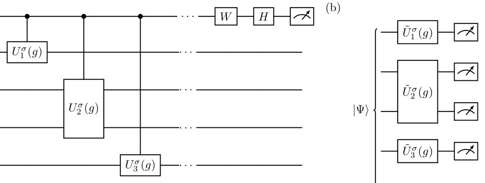
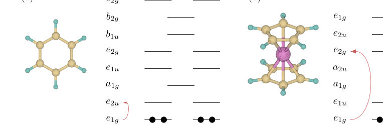
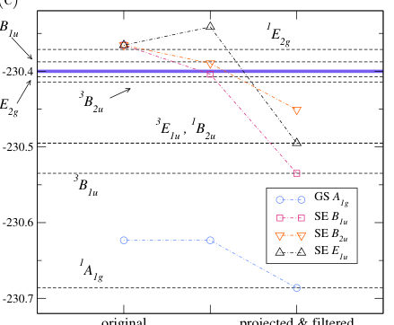
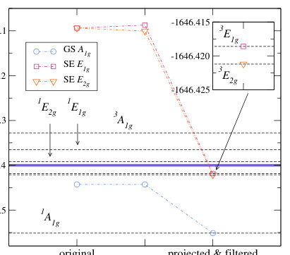
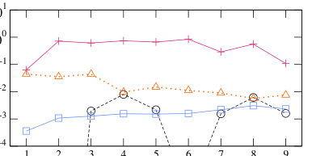
Summary. This paper presents a new quantum-classical hybrid method to analyze the point-group symmetries of many-electron wavefunctions without requiring ancilla qubits. By applying orbital rotations, the method efficiently calculates the weights of irreducible representations. The approach is successfully demonstrated on real IBM quantum hardware, showing that error mitigation can accurately recover symmetry properties in molecular simulations.
Why it may be interesting. It provides a practical framework for using molecular symmetries to reduce computational overhead and verify the accuracy of quantum simulations on near-term hardware.
Main problem. The lack of practical, ancilla-free quantum algorithms for performing detailed point-group symmetry analysis of realistic many-electron wavefunctions.
Main result. The authors propose an ancilla-free hybrid method to calculate irreducible representation weights and demonstrate its efficacy on IBM's ibm_kawasaki device, achieving results within a few percent error using QESEM error mitigation.
Method. A quantum-classical hybrid approach using orbital rotations derived from representation matrix eigenvectors, combined with tensor-network-based state preparation (DMRG-to-brick-wall) and error mitigation techniques like ZNE and QESEM.
Model / system. Many-electron molecular systems, specifically benzene (D6h) and ferrocene (D5d), simulated using electronic structure models and implemented on a superconducting quantum processor.
Key observables. Weights of irreducible representations (w_Gamma), energy expectation values, and wavefunction infidelity.
Important parameters / regimes. Number of qubits (up to 32), number of circuit layers (L=6), regularization parameter (lambda = 0.005), and error mitigation strategies (ZNE, QESEM).
Assumptions / limitations. The study focuses on the spin-restricted case and utilizes DMRG-compressed wavefunctions for the hardware demonstration.
Figures summary. Figures show the optimization process for brick-wall ansatz construction, infidelity vs. circuit layers, and a comparison of symmetry weight estimation accuracy under different error mitigation regimes (No mitigation, ZNE, and QESEM).
Paper structure. The paper introduces the problem of symmetry analysis, proposes a new ancilla-free algorithm, validates it through numerical simulations of benzene and ferrocene, and concludes with a hardware demonstration on an IBM quantum device.
A point group is a set of spatial symmetry operations in molecular systems and is an indispensable tool for analyzing molecular orbitals and spectroscopy experiments in chemistry. Several quantum algorithms to exploit this symmetry have been proposed, but practical implementations of point-group symmetry operations and the detailed symmetry analysis of realistic many-electron wavefunctions are still missing. In this work, we propose an ancilla-free hybrid method to analyze point-group symmetries of many-electron states, which works for both abelian and non-abelian groups. For a given wavefunction, our method calculates the projection weights of point-group irreducible representations by applying orbital rotations derived from the eigenvectors of the representation matrices, therefore it is applicable to arbitrary basis functions. The usefulness of our approach is demonstrated through numerical simulations of benzene and ferrocene molecules. Furthermore, we perform a hardware demonstration of the weight calculation of the ground state and the first excited state of benzene in $D_{2h}$ symmetry, using up to 32 qubits of IBM's \texttt{ibm_kawasaki} device. By combining a tensor-network based encoding scheme and error mitigation techniques, we find the weights of irreducible representations for both states are faithfully reproduced within a few percent error. Our results suggest that the proposed method serves as a practical tool for analyzing symmetry properties of many-electron wavefunctions in realistic material simulations on near-term and early fault-tolerant quantum computers.
Authors: Iago N. Mamede, Francesco Coghi
Type: theory · Category: statistical mechanics · PDF: https://arxiv.org/pdf/2605.24537v1
Analysis basis: full PDF text, analyzed in chunks
Topic relevance: methods for driven-dissipative 3/5 · non-equilibrium dynamics 3/5 · Keldysh / 2PI / non-Gaussian methods 2/5 · correlated / nonlocal dissipation 2/5 · driven-dissipative phase transition 2/5 · non-equilibrium universality 2/5 · quantum measurements 2/5
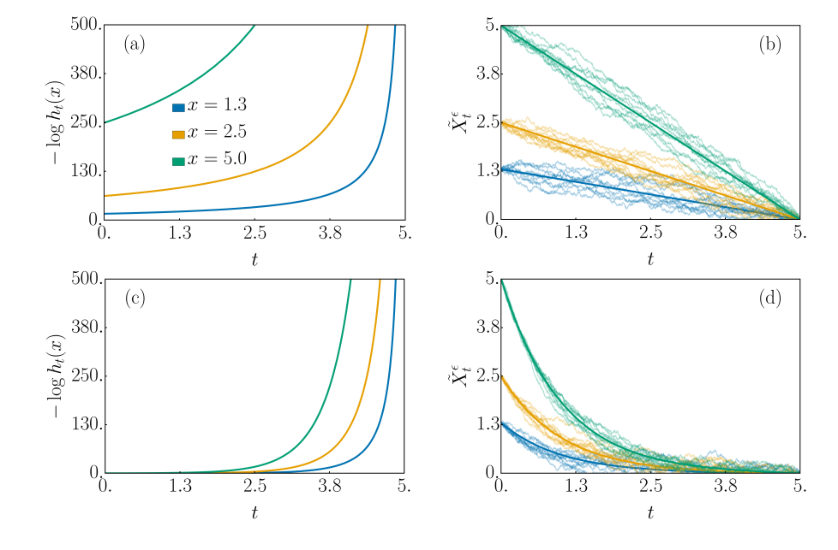
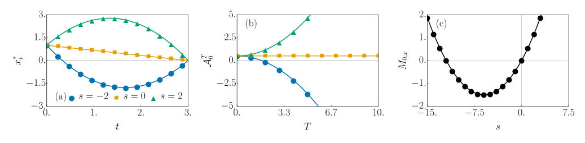
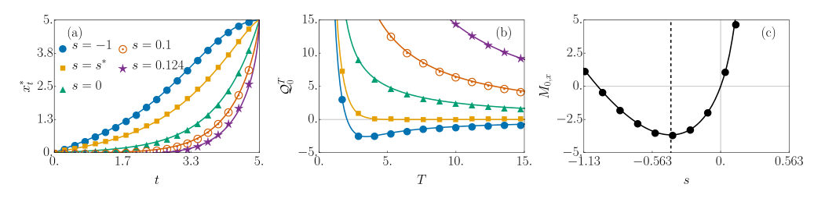
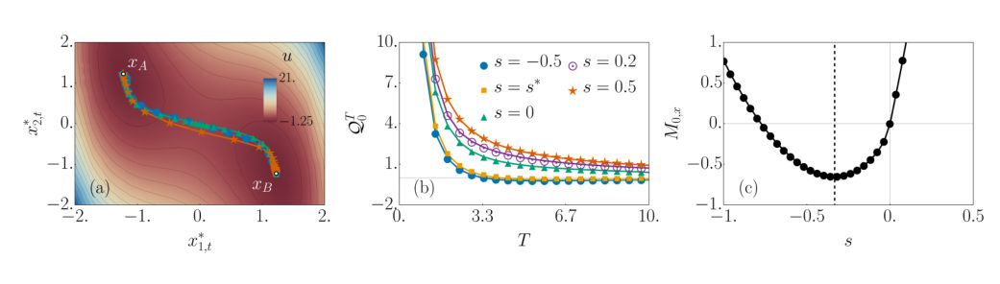
Summary. This paper provides a new way to study rare trajectories in noisy systems by avoiding the complex math of Doob transforms through a post-selection approach. It allows for the calculation of fluctuations in quantities like heat dissipation using an optimal-control framework. The method is validated through analytical models and applied to complex biomolecular landscapes.
Why it may be interesting. The development of a variational principle for conditioned trajectories is highly relevant for studying rare fluctuations and non-equilibrium transitions in open quantum systems and many-body dynamics.
Main problem. Calculating the statistics and moment generating functions of path observables for Doob-conditioned processes in the small-noise, large-deviation regime.
Main result. The authors develop a framework to bypass the need for an explicit Doob h-function by treating the conditioned ensemble as a post-selected original process, yielding an optimal-control representation for the action.
Method. The study uses weak-noise large deviation theory, a WKBJ ansatz, and a Hamilton-Jacobi formulation to derive a variational principle for the leading exponential contribution to the generating function.
Model / system. The framework is applied to time-homogeneous diffusion processes (SDEs) with additive noise, specifically using Brownian bridges, Ornstein-Uhlenbeck processes, and a 2D biomolecular folding model.
Key observables. Moment generating functions, Scaled Cumulant Generating Function (SCGF), rate functions, dissipated heat, and accumulated area under the path.
Important parameters / regimes. Noise intensity (epsilon), terminal time (T), tilting parameter (s), and diffusion coefficient (D).
Assumptions / limitations. The noise is primarily assumed to be additive, the processes are Markovian and time-homogeneous, and the study focuses on the small-noise (epsilon -> 0) limit.
Figures summary. Figure 1 shows the Doob conditioning concept; Figure 2 compares analytical and numerical optimal trajectories and area rates for Brownian bridges; Figure 3 shows OU process trajectories, heat dissipation, and SCGF; Figure 4 presents numerical results for a 2D folding model including instantons and heat dissipation.
Paper structure. The paper begins by defining the problem of Doob conditioning and the difficulty of the h-transform, introduces a post-selection reinterpretation, develops the mathematical framework via Hamilton-Jacobi and optimal control theory, provides analytical benchmarks (Brownian bridge and OU process), and concludes with a numerical application to a biomolecular folding landscape.
Doob fixed-time conditioning enables the sampling of rare trajectories of Markov processes by modifying the drift so that reaching a prescribed target at a given time is guaranteed. We study the statistics of this conditioned path ensemble through the moment generating function in the weak-noise large deviation regime. Since the Doob drift is rarely available in closed form, we reinterpret the conditioned ensemble as the original process post-selected on the terminal constraint, thereby avoiding explicit construction of the Doob transform. This viewpoint then yields an optimal-control representation for the leading exponential contribution to the generating function, expressed as a variational principle with terminal boundary conditions set by the Doob end-point constraint. We illustrate the framework with two analytical examples and with an application to heat dissipation of a minimal model of biomolecular folding.
Authors: Soumyabrata Saha, Sandeep Jangid, Kapil Sharma, Tridib Sadhu
Type: theory · Category: statistical mechanics · PDF: https://arxiv.org/pdf/2605.26069v1
Analysis basis: full PDF text, analyzed in chunks
Topic relevance: non-equilibrium dynamics 3/5 · Keldysh / 2PI / non-Gaussian methods 2/5 · methods for driven-dissipative 2/5 · non-equilibrium universality 2/5 · Kondo & dissipative impurity 1/5
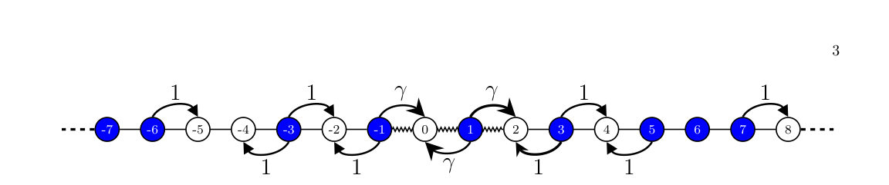
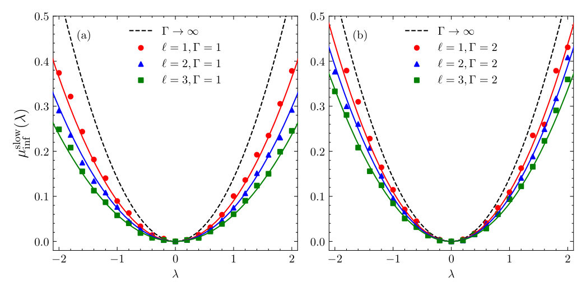
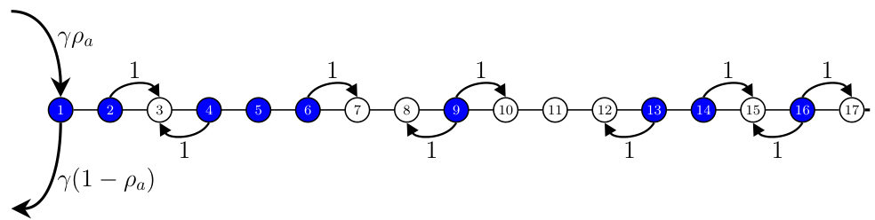
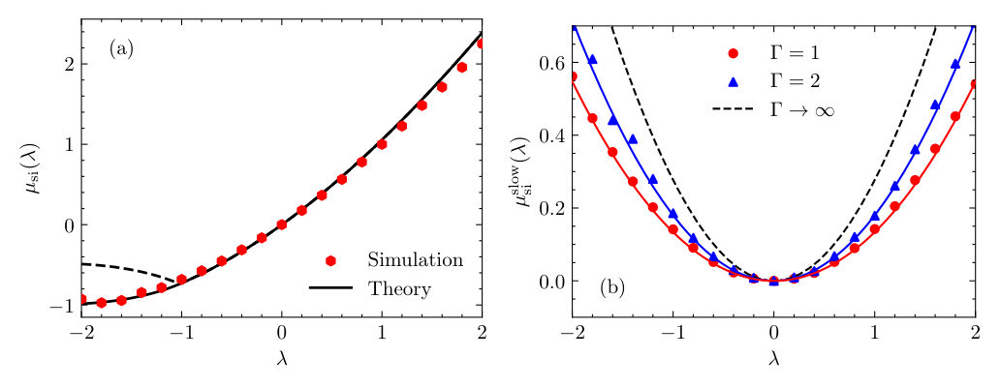
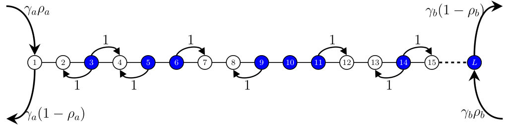
Summary. This paper provides exact analytical solutions for how localized bottlenecks affect current fluctuations in the SSEP model. It establishes that while the system is robust to small defects, a critical scaling regime exists where the slow bonds fundamentally change the macroscopic transport statistics.
Why it may be interesting. not directly relevant
Main problem. Investigating how localized microscopic disorder, specifically 'slow bonds' with reduced hopping rates, modifies the large deviation statistics of particle current in the Symmetric Simple Exclusion Process (SSEP).
Main result. The authors derive exact expressions for the large deviation function of the current across three geometries (infinite, semi-infinite, and finite lattices) and identify a critical scaling regime where slow bonds act as a bottleneck.
Method. The study uses an extension of Macroscopic Flutuation Theory (MFT) and fluctuating hydrodynamics combined with a new coarse-graining scheme, validated by rare-event simulations using the cloning algorithm.
Model / system. The Symmetric Simple Exclusion Process (SSEP) on 1D lattices, where particles perform unbiased random walks with exclusion rules, featuring localized defect bonds with a reduced jump rate gamma.
Key observables. Large deviation function (LDF) and Scaled Cumulant Generating Function (SCGF) of the particle current (net particle flux).
Important parameters / regimes. Jump rate (gamma), number of slow bonds (l), system size (L), observation time (T), and the scaling parameter Gamma = gamma / sqrt(T) or gamma / L.
Assumptions / limitations. The analysis assumes that the large-scale properties can be captured by coarse-grained density fields and utilizes the additivity principle for decomposing the system.
Figures summary. Figure 1 shows a schematic of the SSEP lattice with defect bonds; Figures 2, 4, and 6 provide quantitative comparisons between theoretical SCGF results and numerical simulation data for different geometries.
Paper structure. The paper introduces the problem of slow bonds, presents exact results for three different lattice geometries (infinite, semi-infinite, and finite), provides a new coarse-graining derivation, and validates the analytical findings with numerical cloning simulations.
The symmetric simple exclusion process (SSEP) is a paradigmatic model of classical non-equilibrium dynamics. Exact results for large deviations of particle current in the SSEP have been obtained in various settings using integrability-based methods. In this Article, we discuss how these results are modified in the presence of localized slow bonds. We consider three conventional geometries: (a) a finite one-dimensional lattice weakly coupled to unequal reservoirs at its boundaries, (b) a semi-infinite one-dimensional lattice weakly coupled to a boundary reservoir, and (c) an infinite one-dimensional lattice with localized slow bonds near the origin. For each case, we present exact expressions for the large deviation function of current and validate them through rare-event simulations based on the cloning algorithm. In connection with our results, we present an elementary derivation of the exact large deviation function for the current in the semi-infinite SSEP, complementing recent results obtained through more elaborate techniques.
Authors: Hao Feng, Junjie Liu
Type: theory · Category: statistical mechanics · PDF: https://arxiv.org/pdf/2605.24554v1
Analysis basis: full PDF text, analyzed in chunks
Topic relevance: entanglement & information structure 3/5 · non-equilibrium dynamics 3/5 · correlated / nonlocal dissipation 2/5 · methods for driven-dissipative 2/5
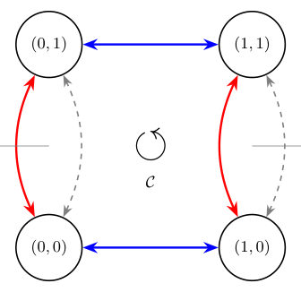
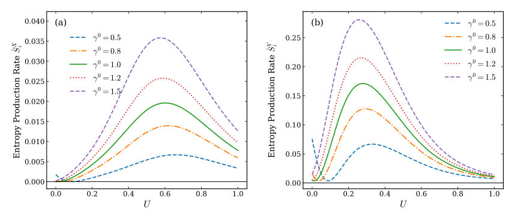
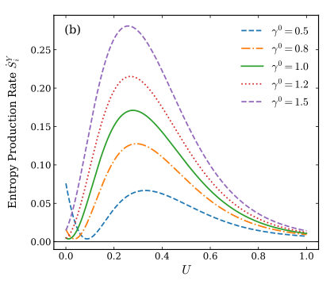
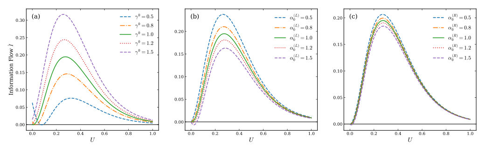
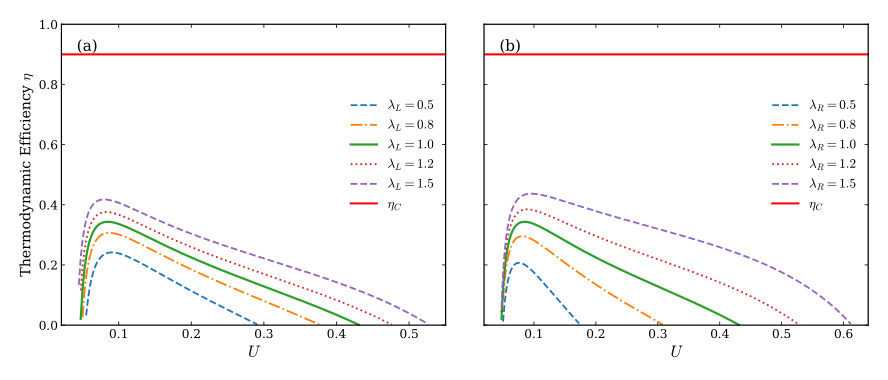
Summary. This paper demonstrates that nonreciprocal couplings in a double-quantum-dot setup can actively regulate information flow and enhance the performance of an information engine. By mapping nonreciprocal dynamics to an effective reciprocal system, the authors show that breaking reciprocity serves as an effective control knob for optimizing power and efficiency.
Why it may be interesting. It provides a novel way to use broken reciprocity as a 'kinetic handle' to control information-to-work conversion, which is highly relevant for the design of open quantum systems and dissipative quantum engineering.
Main problem. Investigating how nonreciprocal dot-reservoir couplings can be used as a control knob to manipulate information flow and optimize the thermodynamic performance of autonomous quantum dot information engines.
Main result. Nonreciprocity can significantly modulate inter-dot information flow, enhance power output, and broaden the heat-engine operating regime, while the efficiency remains bounded by the Carnot limit.
Method. The authors use a Markovian master equation approach and Schnakenberg network theory, employing a reparameterization strategy to map the nonreciprocal system onto an effective reciprocal system.
Model / system. A bipartite autonomous double-quantum-dot system where an upstream 'controller' dot (X) and a downstream 'working substance' dot (Y) are coupled via Coulombic repulsion and connected to separate reservoirs.
Key observables. Information flow (inter-dot), total and local entropy production rates, energy conversion (information-to-work), heat currents, and thermodynamic efficiency.
Important parameters / regimes. Nonreciprocity ratios (gamma and alpha), electron-electron coupling strength (U), temperatures (TX, TY), and chemical potential bias (delta mu).
Assumptions / limitations. The system is in the Markovian limit (weak dot-reservoir coupling) and assumes a bipartite condition where simultaneous jumps in both dots are restricted.
Figures summary. Figure 1 shows the transition network; Figure 3 displays information flow vs. coupling strength under varying nonreciprocity; Figure 4 and 5 show thermodynamic efficiency and power output vs. coupling strength; Figure 6 relates to entropy production.
Paper structure. The paper introduces the nonreciprocal engine architecture, develops a thermodynamic framework using a reparameterization mapping, analyzes the impact of nonreciprocity on information flow and entropy production, and concludes with numerical demonstrations of performance enhancement.
Quantum information engines leverage information as a thermodynamic resource to facilitate energy conversion. In the operation of such engines, the information flow between the working substance and the controller is pivotal, however, strategies for its efficient manipulation remain largely unexplored. Here, we investigate an autonomous information engine based on a double-quantum-dot setup, where a downstream dot coupled to two reservoirs acts as the working substance, and an upstream dot coupled to a single reservoir serves as the controller. By extending the second law of thermodynamics to incorporate the effects of nonreciprocal couplings between the dots and their electronic reservoirs, we develop a thermodynamic framework that allows us to demonstrate that nonreciprocity can significantly modulate the inter-dot information flow, thereby providing a robust control mechanism. We show that the influence of nonreciprocity can be equivalently understood through a mapping to an effective reciprocal system upon a reparameterization of chemical potentials and the electron-electron coupling strength. We further analyze the impact of nonreciprocity on the engine's performance and operation regime. Our findings establish nonreciprocal coupling as an effective control knob for designing and optimizing quantum dot information engines, surpassing the capabilities of conventional reciprocal configurations.
Authors: Yi Cao, Jie Liu
Type: theory · Category: statistical mechanics · PDF: https://arxiv.org/pdf/2605.25008v1
Analysis basis: full PDF text, analyzed in chunks
Topic relevance: methods for driven-dissipative 3/5 · non-equilibrium dynamics 3/5 · Keldysh / 2PI / non-Gaussian methods 2/5 · correlated / nonlocal dissipation 2/5
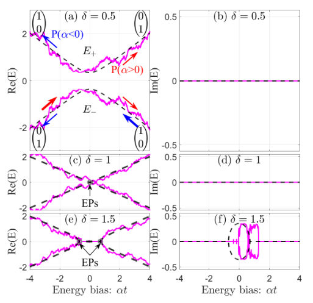
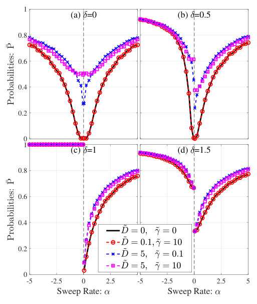
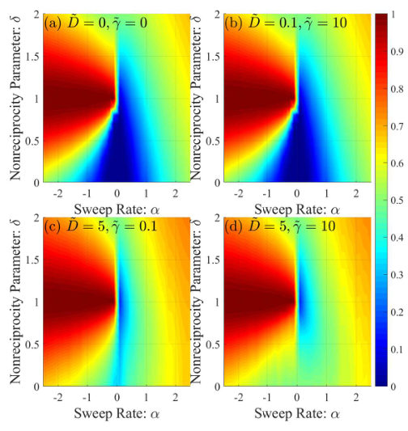
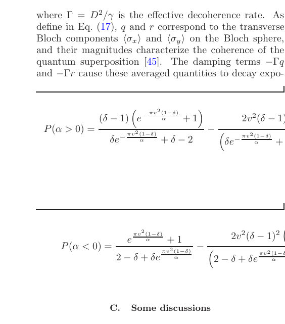
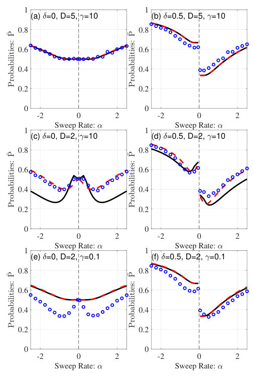
Summary. The paper explores how colored noise from a thermal bath influences nonreciprocal quantum tunneling. It demonstrates that while noise can break the symmetry of tunneling in certain regimes, the system remains robust against noise in the presence of strong nonreciprocity. This work is significant for understanding how environmental fluctuations affect non-Hermitian quantum dynamics.
Why it may be interesting. This paper provides deep insights into the interplay between non-Hermitian physics (exceptional points) and environmental decoherence, which is central to understanding the stability of non-reciprocal quantum devices and open quantum system dynamics.
Main problem. Investigating how heat-bath-induced colored noise affects nonreciprocal Landau-Zener tunneling and the emergence of exceptional points.
Main result. Colored noise generally enhances tunneling under nonadiabatic sweeping and can break the reciprocity of tunneling in the adiabatic limit, though tunneling remains insensitive to noise in the high-nonreciprocity regime ($\delta > 1$).
Method. The study employs the stochastic Schrodinger equation, numerical Runge-Kutta and Heun schemes, and analytical techniques including the Wiener-Hermite expansion and Weber functions.
Model / system. A non-Hermitian two-level Landau-Zener model coupled to a heat bath modeled via a Drude spectral density, resulting in Ornstein-Uhlenbeck colored noise.
Key observables. Tunneling probability (forward and backward sweeps), ensemble-averaged tunneling probability, and instantaneous energy levels.
Important parameters / regimes. Sweep rate ($\alpha$), nonreciprocity parameter ($\delta$), noise amplitude ($D$), and noise correlation rate ($\gamma$).
Assumptions / limitations. Markovian approximation, classical limit ($\hbar o 0$), and the use of a steady-state approximation in the high-dissipation regime ($\Gamma \gg 1$).
Figures summary. Phase diagrams of tunneling probability as a function of sweep rate and nonreciprocity parameter for various noise amplitudes and correlation times; comparison of different numerical and analytical solution types.
Paper structure. Introduction of the nonreciprocal LZ model; derivation of the stochastic dynamics and noise model; numerical results for energy levels and tunneling; analytical derivation of tunneling probabilities in the white-noise and high-damping limits; discussion of physical implications.
In this work, we investigate the effects of heat-bath-induced colored noise on nonreciprocal Landau-Zener tunneling. We perform numerical calculations of the instantaneous energy levels and find that noise induces stochastic fluctuations in these levels. Beyond such fluctuations, sufficiently large nonreciprocity parameters enable noise to further trigger the emergence of multiple exceptional points. The corresponding tunneling probability is significantly modified by colored noise. On the one hand, colored noise generally enhances the tunneling probability under nonadiabatic sweeping. On the other hand, it can break the reciprocity of Landau-Zener tunneling in the adiabatic limit. In particular, for large nonreciprocity parameters, the adiabatic tunneling probability is insensitive to noise and determined by exceptional points. We plot the phase diagram of tunneling probability as a function of the sweep rate and nonreciprocity parameter, for different amplitudes and correlation times of colored noise. Analytically, we derive the exact expression for the tunneling probability in the absence of noise and an approximate solution in the white-noise limit, employing Weber functions and the Wiener-Hermite expansion method. Some implications of our theory are discussed.
Authors: Jilali Loulijat, Abdallah Slaoui, Mohamed Gouighri, Berihu Teklu
Type: theory · Category: quantum information and computing · PDF: https://arxiv.org/pdf/2605.24654v1
Analysis basis: full PDF text, analyzed in chunks
Topic relevance: entanglement & information structure 3/5 · correlated / nonlocal dissipation 2/5 · methods for driven-dissipative 2/5 · non-equilibrium dynamics 2/5
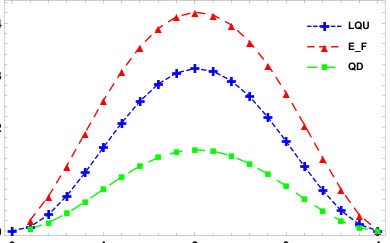
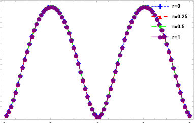
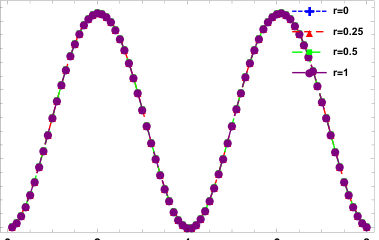
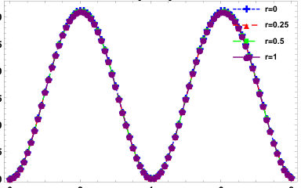
Summary. This paper applies quantum information metrics to study how neutrino flavor oscillations lose their 'quantumness' due to environmental dephasing. It demonstrates that quantum discord can persist even when entanglement vanishes and shows that mixing angles are the primary drivers of correlation strength. The study uses real-world experimental data from KamLAND, MINOS, and Daya Bay to benchmark these effects.
Why it may be interesting. It provides a concrete application of open quantum system dynamics and quantum information theory (discord and LQU) to a high-energy particle physics system, demonstrating how non-classical correlations serve as diagnostics for decoherence.
Main problem. The study investigates how environmental dephasing affects the survival and dynamics of quantum correlations (entanglement, discord, and local quantum uncertainty) in neutrino oscillations.
Main result. The researchers find that while dephasing suppresses all quantumness measures, quantum discord remains more robust than entanglement, and the strength of these correlations is primarily driven by mixing angles rather than baseline length.
Method. The authors use an effective two-qubit description of two-flavor neutrino oscillations and apply a Lindblad-based dephasing channel to quantify the decay of quantum correlations.
Model / system. A two-flavor neutrino oscillation model treated as a bipartite two-qubit system, subjected to a phase-damping (dephasing) channel using Kraus operators and the Lindblad master equation.
Key observables. Entanglement of Formation (EOF), Quantum Discord (QD), Local Quantum Uncertainty (LQU), and neutrino survival/transition probabilities.
Important parameters / regimes. Mixing angles (theta_12, theta_13, theta_23), mass-squared differences, baseline distances (L), neutrino energy (E), and the Lindblad damping parameter (gamma).
Assumptions / limitations. The study is restricted to a two-flavor oscillation framework and assumes a specific phase-damping model with energy-independent dephasing benchmarks.
Figures summary. Figures show the baseline dependence of EOF, QD, and LQU for the KamLAND, MINOS, and Daya Bay experiments under different fractions of the experimental dephasing bound.
Paper structure. The paper begins by mapping neutrino oscillations to a two-qubit system, defines quantum correlation measures, applies a dephasing model, benchmarks the results against specific neutrino experiments, and concludes with a sensitivity analysis.
This study examines the dynamics of quantumness in two-flavor neutrino oscillations subjected to a dephasing channel, using representative oscillation parameters associated with the KamLAND, MINOS, and Daya Bay experiments. We analyze three complementary quantum-correlation measures-entanglement of formation (EOF), quantum discord (QD), and local quantum uncertainty (LQU)-within an effective two-qubit description. In the unitary case, all three measures display oscillatory behavior controlled by flavor mixing, and their amplitudes are strongly shaped by the relevant mixing angle. MINOS exhibits the largest correlations because $θ_{23}$ is close to maximal, KamLAND shows intermediate values associated with the solar sector, and Daya Bay yields smaller correlations due to the relatively small value of $θ_{13}$. Under dephasing, the off-diagonal coherence terms are suppressed and the three quantifiers decrease accordingly, while QD remains non-zero in regimes where entanglement is weak. For pure states, LQU satisfies $\mathcal{U}=\mathcal{C}^2$ and therefore tracks entanglement monotonically, whereas QD provides a broader witness of non-classical correlations. These results provide a compact quantum-information description of two-flavor neutrino oscillations in both coherent and dephased regimes. We also quantify the sensitivity of these observables to oscillation and decoherence parameters, showing that their main added value relative to flavor probabilities is their direct response to off-diagonal coherence loss.
Authors: Manika Bhardwaj, Moritz Göb, Bogomila S. Nikolova, Bernd Bauerhenne, Peter A. Ivanov, Kilian Singer
Type: experiment · Category: other · PDF: https://arxiv.org/pdf/2605.25125v1
Analysis basis: full PDF text, analyzed in chunks
Topic relevance: QC/QI experiment 3/5 · analog quantum simulation 2/5 · non-equilibrium dynamics 2/5 · quantum optics experiment 2/5
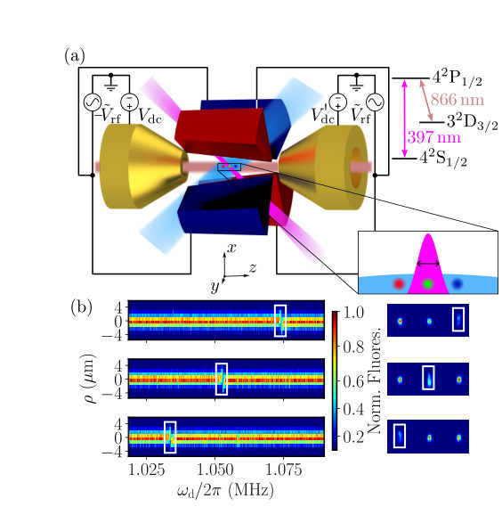
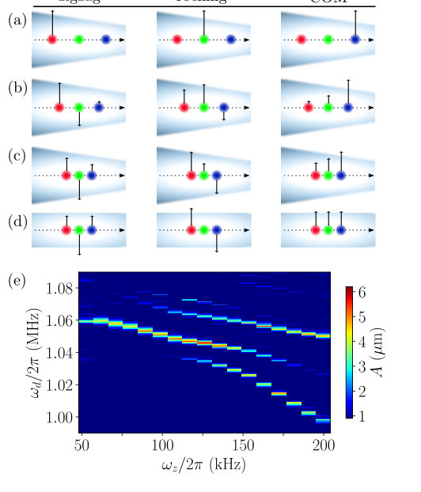
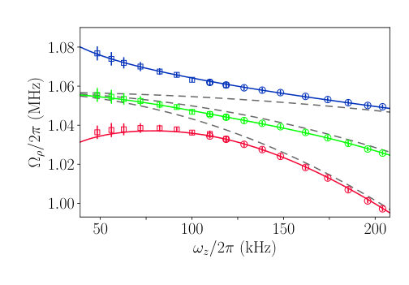
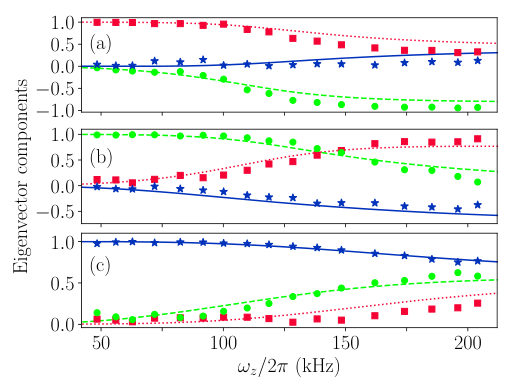
Summary. This paper demonstrates how the geometry of a tapered Paul trap can be used to tune the coupling between ions, driving a transition from independent local oscillations to collective modes. By varying axial confinement, the researchers mapped the transformation of radial eigenmodes. This provides a platform for studying controlled quantum transport and defect formation in ion chains.
Why it may be interesting. This work is highly relevant for studying phonon localization, modified heat transport, and the development of nonlinear radial modes for continuous-variable quantum computing in ion-based systems.
Main problem. Investigating the transition from collective radial motional modes to individual (local) radial oscillations in a tapered Paul trap by varying axial confinement.
Main result. The researchers experimentally observed a complete transformation of radial eigenfrequencies and eigenvectors, demonstrating that increasing axial confinement reduces frequency gaps and enables the transition from localized to collective phonon behavior.
Method. The team used sinusoidal modulation of laser intensity to drive oscillations and an iCCD camera for detection, comparing experimental radial eigenfrequencies and eigenvectors with a theoretical model based on a Taylor approximation of the trap potential.
Model / system. A tapered Paul trap containing three 40Ca+ ions, where the trap geometry creates an axial position-dependent radial confinement, allowing for a transition between decoupled and coupled regimes.
Key observables. Radial eigenfrequencies, eigenmode eigenvectors (ion participation), and oscillation amplitudes.
Important parameters / regimes. Axial trapping frequency (47 kHz to 205 kHz), radial trapping frequency (~1 MHz), and the funnel length (1.81 mm).
Assumptions / limitations. The theoretical model uses a Taylor approximation of the potential around equilibrium positions and assumes a 1D chain of ions.
Figures summary. Fig 1 shows the trap schematic and examples of local excitations; Fig 2 shows the progression of oscillations from local to collective; Fig 3 plots radial eigenfrequencies vs. axial confinement; Fig 4 shows eigenvector components (ion participation) across the transition.
Paper structure. The paper introduces the tapered trap geometry, describes the experimental setup and measurement protocol, presents the results of the mode transition and frequency divergence, compares findings to theoretical predictions, and discusses implications for quantum transport and nonlinear dynamics.
With coupled detuned oscillators, either individual or collective oscillations are observable. The latter is used in quantum information processing in linear Paul traps. Here, we study the transition from collective radial modes at stronger axial confinements into individual radial oscillations at low axial confinements in a tapered Paul trap. The eigenmodes are experimentally studied in detail in the transition regime and compared with theoretical predictions. The features studied will enable investigation of modified heat transport phenomena and defect formation in trapped ions.
Authors: Juan M. Scarpetta, Gustavo A. Parra, Alejandro González-Melan, Javier Madroñero
Type: theory · Category: disordered systems and neural networks · PDF: https://arxiv.org/pdf/2605.25324v1
Analysis basis: full PDF text, analyzed in chunks
Topic relevance: methods for driven-dissipative 3/5 · non-equilibrium dynamics 3/5 · scars & prethermalization 2/5
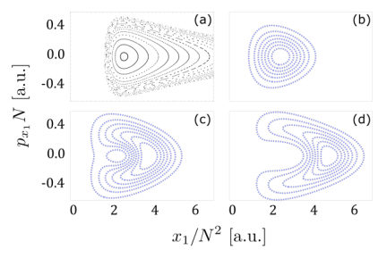
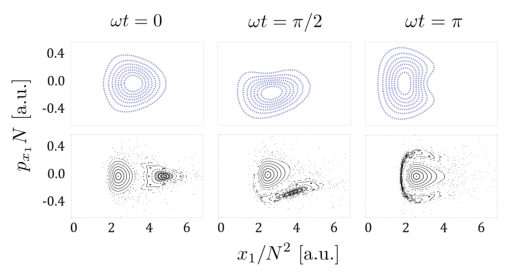
Summary. The paper presents an unsupervised machine learning framework to automatically identify nondispersive wave packets in driven helium atoms. By using a convolutional neural network to embed quantum state distributions, the method successfully clusters and recovers physically significant states like frozen planet states without manual labeling. This establishes representation learning as an effective tool for analyzing complex, high-dimensional quantum datasets.
Why it may be interesting. This work demonstrates a powerful application of unsupervised representation learning to automate the discovery of complex, long-lived quantum structures in driven, strongly correlated systems, which is highly relevant for studying non-equilibrium dynamics and quantum-classical correspondence.
Main problem. The difficulty of systematically identifying nondispersive wave packets (NDWPs) and frozen planet states in driven helium due to the vast, multidimensional parameter space and the need for manual inspection of complex spectral data.
Main result. An unsupervised learning approach using a Convolutional Neural Network (CNN) successfully automates the identification of NDWPs by clustering quantum states in a low-dimensional embedding, recovering known regimes without prior labeling.
Method. The authors use a CNN to construct a low-dimensional embedding of quantum state probability distributions (images) in configuration and phase space, followed by K-means clustering and PCA for classification.
Model / system. A driven helium atom modeled as a three-body Coulomb problem in an asymmetric collinear configuration, subjected to a linearly polarized monochromatic driving field and a static electric field.
Key observables. Configuration-space density, Husimi distributions (phase-space representation), quasienergies (real and imaginary parts), and classical Poincaré sections.
Important parameters / regimes. Driving frequency (omega), driving field amplitude (F), static field strength (Fst), and angular momentum (L).
Assumptions / limitations. Infinite nuclear mass approximation, dipole approximation, and length gauge treatment; the continuum spectrum is discretized due to finite basis representation.
Figures summary. Figure 1 shows Husimi distributions of frozen planet states; Figure 2 shows NDWP phase-space evolution; Figure 3 details the database and data augmentation; Figure 4 shows the CNN architecture; Figures 5-7 illustrate the training loss, embedding visualization, and 5D clustering; Figures 8-10 show the comparison between quantum and classical structures and the temporal evolution of wave packets.
Paper structure. The paper introduces the problem of NDWP identification, describes the physical model of driven helium, details the construction of the dataset and the CNN architecture, presents the results of the unsupervised clustering and validation against physical parameters, and concludes with limitations and future directions.
Nondispersive wave packets in driven helium are long-lived quantum states that follow classical resonant orbits without spreading. Their identification typically requires detailed analysis of phase-space structures and extensive exploration of parameter regimes. In this work, we introduce an unsupervised learning approach to automate the identification of physically relevant states in the driven helium atom. Using a Floquet-based description, quantum states are computed and represented as probability distributions in configuration and phase space, which serve as input to a convolutional neural network that constructs a low-dimensional embedding of the data. Clustering in the embedding space reveals distinct classes of quantum states. By combining geometric analysis, physical parameter inspection, and time-evolution studies, we identify clusters corresponding to frozen planet states and nondispersive wave packets. The method successfully recovers known NDWP regimes without prior labeling, demonstrating that the learned representation captures physically meaningful structures in a systematic and automated manner. These results establish unsupervised representation learning as an effective tool for the systematic analysis of complex quantum datasets.
Authors: Declan Maguire, Fabio Costa
Type: theory · Category: quantum information and computing · PDF: https://arxiv.org/pdf/2605.25302v1
Analysis basis: full PDF text, analyzed in chunks
Topic relevance: quantum measurements 3/5 · correlated / nonlocal dissipation 2/5 · entanglement & information structure 2/5
Summary. The paper demonstrates that causal order cannot be treated as a standard quantum observable because, unlike quantum states, the ability to distinguish individual causal orders does not guarantee the ability to distinguish them jointly or via mixtures. This suggests that causal structure is a global property reconstructed from correlations rather than an independent property that can be measured directly.
Why it may be interesting. This is highly relevant for researchers in open quantum systems and quantum networks, as it challenges the fundamental way we understand the measurement and reconstruction of causal structures in quantum-mechanical settings.
Main problem. Investigating whether causal order in quantum processes can be formally treated as a physical observable that can be measured via single-shot discrimination tasks.
Main result. The authors prove that causal order cannot be interpreted as an observable because the necessary conditions for observability (specifically joint and class-wise distinguishability) are violated for quantum processes.
Method. The authors construct an operational definition of observables based on three conditions of discrimination tasks and use a proof-by-contradiction approach involving process matrices and dimensionality arguments.
Model / system. The study uses the quantum process matrix formalism, focusing on Markovian quantum processes and channels that encode causal structures, including scenarios with permuted sites.
Key observables. Causal order, sharpness (perfect distinguishability), and joint distinguishability of process classes.
Important parameters / regimes. Number of sites (n), local dimension (d), and the scaling bound d >= (n!)^(1/4n).
Assumptions / limitations. The processes are assumed to be Markovian and causally strict; the analysis focuses on single-shot discrimination tasks.
Paper structure. The paper begins by defining an operational framework for observables via discrimination tasks, then introduces the process matrix formalism, proceeds to prove violations of the three required conditions using specific constructions of permuted processes and channels, and concludes by discussing the implications for the relationship between quantum and geometric causality.
Recent developments in the formalisation of quantum causal structures have made it possible to test and compare hypotheses about causal structure empirically, rather than being a-priori assumptions. Such differences in causal structure may be leveraged to distinguish between the processes they belong to, akin to distinguishing between quantum states known to belong to different eigenspaces of an observable. So how far this analogy can be pushed? Can causal order be interpreted as a kind of observable? Can it be measured? To this end we construct a completely operational definition of observables in terms of discrimination tasks'. This begins with some base set of classes (analogous to a quantum observable's eigenspaces) before we impose three conditions on how these classes relate under discrimination tasks. These conditions recover the properties of a standard observable, letting us apply this definition to non-state entities such as quantum processes, which naturally encode causal structure. These conditions can be described in plain language as (1)members of any class are perfectly distinguishable from members of any other' (i.e. our classes are sharp'), (2)entities perfectly distinguishable pairwise are all perfectly distinguishable by a joint intervention', and (3) `if all members of a class are perfectly distinguishable from an entity, then the whole class is perfectly distinguishable from it jointly'. By analysing classes of quantum processes having strict causal orders, we find causal classes which are sharp but violate condition 2, and classes which violate condition 3. This implies that causal order cannot be an observable. We note cases in the literature which claim to prove the opposite, and discuss them. We find their analyses presume special circumstances equivalent to conditions (2) and (3), and so do not contradict our own findings.
Authors: Saurabh U. Shringarpure, Siheon Park, Sungjoo Cho, Yong Siah Teo, Hyukjoon Kwon, Srikrishna Omkar, Hyunseok Jeong
Type: theory · Category: quantum information and computing · PDF: https://arxiv.org/pdf/2605.24540v1
Analysis basis: full PDF text, analyzed in chunks
Topic relevance: interference shaping light 3/5 · correlated / nonlocal dissipation 2/5 · quantum measurements 2/5
Summary. The paper introduces a code-agnostic protocol to suppress bosonic noise in traveling modes by using a hybrid CV-DV interferometer. By sandwiching noise between controlled-Fourier gates, the protocol reduces error scaling from linear to quadratic. The method is versatile, working for various bosonic codes and extending to qutrit ancillas to handle complex noise environments.
Why it may be interesting. This work is highly relevant to quantum optics and open quantum systems as it provides a hardware-efficient, passive method to reshape noise channels and improve the fidelity of bosonic encodings using hybrid CV-DV interactions.
Main problem. Physical-level noise in traveling bosonic modes, such as photon loss, thermal excitation, and Gaussian displacement noise, acts as a critical bottleneck for scalable quantum information processing.
Main result. The authors propose a code-agnostic, hybrid CV-DV interferometer that suppresses noise effects from linear to quadratic scaling without active error correction or destructive measurements.
Method. A feedback-free protocol using a single qubit (or qutrit) ancilla and two controlled-Fourier (CF) gates that sandwich the noise channel to induce destructive interference of error terms.
Model / system. A hybrid continuous-variable (CV) and discrete-variable (DV) system, applicable to platforms like cavity/circuit QED and trapped ions, involving bosonic modes (qumodes) and qubit or qutrit ancillas.
Key observables. Success probability (p_succ), average fidelity (F), and infidelity (1-F).
Important parameters / regimes. Loss rate (mu), amplification gain (G), thermal noise rate (eta), mean photon number (n_bar), and ancilla damping strength (p).
Assumptions / limitations. Assumes the ancilla is initialized; assumes noiseless CF gates for the ideal case; assumes the ancilla damping channels commute.
Figures summary. Figure 1 shows the hybrid interferometer setup and optical circuit implementation; Figure 2 illustrates the multi-ancilla extension; Figure 3 shows average suppression performance; Figure 4 compares parity-based code resilience; Figure 5 shows performance vs. ancilla damping; Figure 6 compares squeezed vs. bare cat codes; Figure 9/10 show the qutrit extension.
Paper structure. The paper introduces the noise problem, presents the core single-ancilla CF-gate protocol, extends the method to multi-ancilla and qutrit systems, analyzes performance for various bosonic codes (cat, GKP, binomial), and evaluates the protocol in quantum communication/teleportation scenarios.
Physical-level noise on traveling bosonic modes remains a critical bottleneck for scalable quantum information processing. We show that for any single-mode bosonic code (qumode) corrupted by thermal or Gaussian displacement noise at loss rate $μ$ and amplification $G$, a hybrid continuous-discrete-variable (CV-DV) interferometer using a single qubit ancilla and two controlled-Fourier (CF) gates sandwiching the noise channel suppresses its effects from linear to quadratic scaling. This is achieved without active error correction or destructive measurements of the encoded state, maintaining high success probabilities $\geq 0.5$ when $μG \leq 0.5$. When supplemented with multiple ancillas, the protocol converts photon loss into coherent Fock-damping, and thermal or displacement noise into a mixture of Fock-diagonal noise. The protocol is entirely code-agnostic. For the special case of $2^K$-fold rotation-symmetric bosonic codes, it simplifies to conventional error detection and projection with $K$ ancillas. Suppression with simple gates and few ancillas demonstrates a clear hardware-efficient advantage over previously proposed ``bypass'' schemes, where quantum information transferred to the DV ancillas is readily corrupted by ancilla noise. Finally, we extend the protocol to a qutrit DV ancilla. This demonstrates resilience to both CV noise and composite DV damping noise, achieving a truly hybrid noise suppression scheme that operates effectively even on CV encodings lacking a well-defined photon-number parity syndrome.
Authors: Enrique I. Ramírez-Juárez, Genaro Lopez-Olivera, Luis A. Peña Ardila, Arturo Camacho-Guardian
Type: theory · Category: quantum gases · PDF: https://arxiv.org/pdf/2605.25202v1
Analysis basis: full PDF text, analyzed in chunks
Topic relevance: analog quantum simulation 3/5 · Keldysh / 2PI / non-Gaussian methods 2/5 · Kondo & dissipative impurity 2/5
Summary. This paper explores how non-local interactions in a 2D lattice change the nature of polarons. It discovers that these interactions create new quasiparticle branches and 'dark' states that cannot be seen in standard spectral measurements due to symmetry. These findings suggest new ways to use quantum microscopy to detect hidden quantum states.
Why it may be interesting. It reveals 'hidden' many-body states that are invisible to standard spectroscopy but detectable via site-resolved microscopy, providing a new way to probe complex quasiparticle structures in engineered quantum systems.
Main problem. Investigating how extended, non-local interactions in a lattice modify the structure of polarons and whether they generate new, spectroscopically invisible 'dark' quasiparticle states.
Main result. The study identifies that nearest-neighbor interactions induce additional repulsive polaron branches and 'dark' impurity states that are orthogonal to the bare impurity, possessing nontrivial dipolar spatial symmetries.
Method. A Chevy-type variational approach restricted to a single bosonic excitation, supplemented by a T-matrix approach for benchmarking and symmetry analysis.
Model / system. A single mobile impurity in a 2D square optical lattice coupled to an ideal Bose-Einstein Condensate (BEC) at zero temperature, featuring strong on-site repulsion and tunable nearest-neighbor interactions.
Key observables. Energy eigenvalue spectrum, spectral function A(omega), polaron wave functions, and impurity-boson spatial correlations.
Important parameters / regimes. On-site repulsion (U0/tb fixed at 12), tunable nearest-neighbor interaction (UI/tb), and lattice geometry (2D square).
Assumptions / limitations. The variational ansatz is limited to at most one bosonic excitation, and the bosonic medium is treated as an ideal gas at zero temperature.
Figures summary. Figure 1 shows a schematic of the lattice polaron; Figure 2 displays the two-body scattering spectrum with various bound states; Figure 3 shows the spectral function as a function of frequency and interaction strength; Figure 4 identifies dark states in the energy spectrum; Figure 5 illustrates momentum-space wave functions and real-space spatial correlations; Figure 6 compares the T-matrix and Chevy ansatz spectral functions.
Paper structure. The paper introduces the problem of extended interactions, describes the 2D lattice polaron model and variational method, presents two-body scattering results, analyzes the many-body spectrum and the emergence of dark states, discusses spatial symmetries, and concludes with experimental implications.
Lattice impurities have recently emerged as a platform in which polarons unveil new quantum many-body states absent in free space and can serve to probe strongly correlated matter. In this work, we investigate two-dimensional lattice polarons with strong on-site repulsion and tunable nearest-neighbor interactions using a variational approach including up to one excitation of the medium. We show that extended interactions qualitatively modify the quasiparticle structure beyond the conventional attractive and repulsive polaron picture. A direct analysis of the eigenvalue spectrum reveals the presence of dark impurity states, orthogonal to the bare impurity and therefore spectroscopically dark. These states exhibit nontrivial internal structure, including dipolar symmetries in real space. Our results demonstrate that long-range interactions generate multiple quasiparticle excitations with distinct symmetry properties, highlighting the crucial role of interaction range and lattice geometry. This work opens new avenues for probing hidden quasiparticle states in lattice systems through spectroscopic and wave-function-resolved measurements.
Authors: Guangjie Zhang, Bing Shao, Longwen Zhou, Jiangbin Gong, Weiwei Zhu
Type: theory · Category: disordered systems and neural networks · PDF: https://arxiv.org/pdf/2605.25072v1
Analysis basis: full PDF text, analyzed in chunks
Topic relevance: driven-dissipative phase transition 3/5 · non-equilibrium dynamics 2/5 · non-equilibrium universality 2/5
Summary. This paper explores phase transitions in non-Hermitian quasicrystals where PT-symmetry is not preserved. It demonstrates that such systems can undergo simultaneous transitions in localization, topology, and spectral degeneracy. The study reveals that non-Hermiticity introduces new types of localization behavior beyond what is seen in PT-symmetric or Hermitian systems.
Why it may be interesting. This work is highly relevant for researchers in open quantum systems and many-body dynamics as it reveals how non-Hermiticity and the lack of PT-symmetry can fundamentally alter the nature of phase transitions and localization behavior.
Main problem. The study investigates how the absence of parity and time-reversal (PT) symmetry affects topological metal-insulator transitions in one-dimensional non-Hermitian quasicrystals.
Main result. The authors identify a triple phase transition involving localization, topology, and degeneracy-breaking in general non-PT-symmetric regimes, and distinguish between localization driven by non-Hermitian skin effects and localization analogous to Hermitian systems.
Method. Numerical simulations using rational approximations of the golden ratio via Fibonacci numbers, combined with analytical approaches like similarity transformations and winding number calculations via twisted boundary conditions.
Model / system. A one-dimensional non-Hermitian quasiperiodic tight-binding model (a non-Hermitian Aubry-André-Harper model) featuring a complex potential with a relative phase shift and asymmetric nearest-neighbor couplings.
Key observables. Inverse Participation Ratio (IPR), Fractal Dimension (FD), spectral winding number (omega), degeneracy rate (eta), and maximum imaginary part of eigenenergies.
Important parameters / regimes. Potential strength (v), relative phase shift (phi), and the asymmetric coupling ratio (alpha).
Assumptions / limitations. The system is studied in the thermodynamic limit using large Fibonacci-sized lattices to approximate the irrational quasiperiodic potential.
Figures summary. Phase diagrams for IPR, winding number, and degeneracy rate; plots of IPR as a function of potential strength and phase shift to demonstrate localization transitions.
Paper structure. The paper introduces the non-PT-symmetric model, presents the numerical and analytical methods for identifying phase boundaries, details the discovery of the triple phase transition, explores special PT-symmetric and TR-symmetric limits, and concludes with a discussion of the distinct localization mechanisms.
One-dimensional non-Hermitian quasicrystals with parity and time-reversal (PT) symmetry can simultaneously exhibit localization-delocalization transition, topological phase transition, and PT-symmetry-breaking transition. This motivates this work to investigate how the absence of PT symmetry impacts topological metal-insulator transitions in non-Hermitian quasicrystals. We propose a non-Hermitian quasiperiodic model that generally does not preserve PT symmetry and demonstrate that, in most parameter regions, such a system supports triple phase transitions that encompass localization, topology, and degeneracy-breaking. The system may also exhibit a particular type of localization-delocalization transition analogous to the Hermitian case, namely, without activating topological phase transitions or degeneracy-breaking transitions. Our work extends the topological metal-insulator transitions previously studied in PT-symmetric systems to a more general class of non-Hermitian setting, and further reveals that non-Hermitian systems can host distinct types of localization behavior.
Authors: Ryuki Ito, Taisei Matsuo, Masayuki Ohzeki
Type: theory · Category: statistical mechanics · PDF: https://arxiv.org/pdf/2605.25683v1
Analysis basis: full PDF text, analyzed in chunks
Topic relevance: entanglement & information structure 3/5 · measurement-induced transitions 2/5
Summary. This paper uses real-space renormalization group methods to study phase transitions in permutation models that are linked to entanglement transitions in random quantum circuits. It provides a rigorous numerical validation of duality-based predictions and identifies the most reliable mathematical methods for extrapolating results to the critical replica limit.
Why it may be interesting. not directly relevant
Main problem. Determining the critical points of the ferromagnetic-paramagnetic phase transition in the permutation model and estimating the transition point in the replica limit (q -> 0) which corresponds to the entanglement entropy transition in random tensor networks.
Main result. The study finds that RSRG results for hierarchical lattices are broadly consistent with duality-based predictions, while identifying that a rational function is the most robust extrapolation scheme for reaching the replica limit.
Method. Exact real-space renormalization group (RSRG) calculations on self-dual hierarchical lattices combined with various numerical extrapolation techniques (polynomial, power-law, and rational functions).
Model / system. A classical permutation model where spins are elements of the symmetric group S_q, with a Hamiltonian based on the cycle-counting function of permutations.
Key observables. Critical bond dimension (Dc), critical coupling (Kc), and the diagnostic function G_N(D) used to identify RG flow direction.
Important parameters / regimes. Number of replicas (q = mn), bond dimension (D), interaction strength (J), and the hierarchical lattice branching parameter (b).
Assumptions / limitations. The reduction of the full duality relation to a single scalar equation for the principal Boltzmann factor is assumed, and the accuracy of the extrapolation to the q -> 0 limit is subject to systematic uncertainty.
Figures summary. Figure 1 shows the unit lattice structure; Figure 2 illustrates hierarchical lattices for different generations; Figure 3 plots critical points (Dc) vs q for various b values compared to duality predictions; Figure 4 visualizes the extrapolation of data toward the q -> 0 limit.
Paper structure. The paper introduces the permutation model and its connection to quantum entanglement, describes the RSRG method on hierarchical lattices, presents numerical results for various q and b, compares these results to duality predictions, evaluates different extrapolation schemes using a benchmark Ising model, and concludes with future directions.
The permutation model is a classical spin system where elements of the symmetric group interact with one another. The partition function of this model is directly related to the entanglement structure of random quantum circuits and random tensor networks. In these contexts, the entanglement entropy undergoes a transition between area-law and volume-law scaling, depending on the model parameters. This transition point has attracted considerable attention. In the present work, we investigate the ferromagnetic-paramagnetic phase transition of the permutation model, which corresponds to the entanglement entropy transition. Using exact real-space renormalization group calculations on self-dual hierarchical lattices, we numerically determine finite-replica critical points for (q=mn=2,...,6). We compare the results with the duality prediction based on the Fourier transform of the symmetric group and then extrapolate the b=3 data toward the replica limit $mn\to0$, where the effective dimension is two. The comparison supports the duality-based estimate while also clarifying the systematic uncertainty associated with the extrapolation formula.
Authors: Tomáš Opatrný, Allison Brattley, Kunal K. Das
Type: theory · Category: quantum information and computing · PDF: https://arxiv.org/pdf/2605.24861v1
Analysis basis: full PDF text, analyzed in chunks
Topic relevance: quantum measurements 3/5 · entanglement & information structure 2/5
Summary. This paper shows that if you have prior knowledge about the states being teleported, the standard benchmarks for proving quantum advantage are too low. By using a von Mises-Fisher distribution, the authors derive new, higher fidelity thresholds that account for non-uniform input distributions.
Why it may be interesting. This is highly relevant for quantum optics and quantum information as it redefines the criteria for claiming 'quantum advantage' in realistic scenarios where input states are not perfectly unknown.
Main problem. Establishing reliable fidelity benchmarks for quantum teleportation when input states are drawn from non-uniform prior distributions, rather than the standard uniform distribution.
Main result. The study demonstrates that standard fidelity thresholds (like 2/3 for qubits) can significantly underestimate the classical limit when prior knowledge exists, and that optimal teleportation strategies require specific measurement axes related to the distribution's concentration.
Method. The authors use Bayesian inference and optimization to derive analytical expressions for mean fidelity, comparing projective measurements and Coherent Spin POVMs.
Model / system. The model includes single qubits on the Bloch sphere and multi-qubit systems modeled as spin coherent states, with input states following a von Mises-Fisher distribution.
Key observables. Mean fidelity (average fidelity of the teleportation process).
Important parameters / regimes. Concentration parameter (kappa), mean number of excitations (n), and particle number (N).
Assumptions / limitations. The results are derived specifically for spin coherent states and von Mises-Fisher distributions.
Figures summary. Figure 1 plots mean fidelity against mean excitations for different projection axes; Figure 2 shows the optimal estimated angle versus detected angle; Figure 3 compares different measurement strategies against the 2/3 baseline; Figure 4 shows multi-particle fidelity scaling.
Paper structure. The paper introduces the problem of non-uniform priors, develops the mathematical framework using Bayesian methods for single and multi-qubit systems, compares measurement strategies (projective vs. POVM), and provides analytical derivations in the appendix.
Quantum teleportation should surpass maximum fidelity thresholds possible with local measurements and classical communications. Benchmarks have been established when states are drawn from a uniform distribution of qubits or coherent states of harmonic oscillators. These are not applicable when there is prior knowledge about the input that skews the distribution. We determine the highest mean fidelity achievable for teleportation of states without using entanglement but drawn from a non-uniform prior distribution, specifically a von Mises - Fisher distribution. Using Bayesian methods, we derive benchmark functions for single qubit teleportation that utilize projective measurement on specific axes on the Bloch sphere. We demonstrate that similar results can be achieved with a coherent spin positive operator-valued measure (POVM), based upon heterodyne detection. These methods are then used to derive corresponding benchmarks for teleporting multi-qubit systems that we model as spin coherent states, covering the full range of particle number $N\in [1, \infty)$. The results show that fidelity thresholds to declare quantum advantage can be significantly higher than is typically assumed with uniform distribution.
Authors: Max Joseph Fahn, Renata Ferrero, Kristina Giesel, Roman Kemper
Type: theory · Category: other · PDF: https://arxiv.org/pdf/2605.25936v1
Analysis basis: full PDF text, analyzed in chunks
Topic relevance: methods for driven-dissipative 3/5 · non-equilibrium dynamics 2/5
Summary. This paper extends existing models of gravitationally induced decoherence by replacing linear position coupling with non-linear Weyl element coupling. It introduces a new method for calculating environmental correlations that is compatible with polymer quantum mechanics and shows that the model reduces to standard decoherence models in the limit of small Weyl parameters.
Why it may be interesting. This work is highly relevant to researchers in open quantum systems as it provides new mathematical tools (STFT) for calculating correlation functions in non-linear regimes and bridges the gap between standard Schrödinger quantization and Loop Quantum Gravity-inspired polymer quantization.
Main problem. Generalizing models of gravitationally induced decoherence to include non-linear environmental interactions, specifically moving beyond linear coupling to position operators to accommodate polymer quantum mechanics.
Main result. The authors derived a renormalized master equation for a Weyl-element coupling model and demonstrated that it recovers standard linear decoherence models in the small-parameter limit while providing a framework for polymer quantization.
Method. The study employs two analytical approaches: using Wick's theorem with annihilation/creation operators and a Short-Time Fourier Transform (STFT) method, alongside Taylor expansions and renormalization techniques.
Model / system. A microscopic quantum mechanical toy model where a system of interest is coupled to a thermal bath of harmonic oscillators via non-linear Weyl elements (sine-like coupling).
Key observables. Environmental correlation functions (one-point and two-point), density matrix elements, and the decoherence/dissipation rate.
Important parameters / regimes. Weyl parameter (mu_0), coupling strength (g), inverse temperature (beta), and high-frequency cutoff (Omega).
Assumptions / limitations. The environment is a bath of harmonic oscillators, the system Hamiltonian is time-independent with a discrete spectrum, and the master equation is truncated at the second order in the coupling parameter.
Figures summary. Figure 3 shows the time evolution of the real part of the density matrix elements, comparing unitary evolution, the zeroth-order linear model, and the higher-order exponential coupling model.
Paper structure. The paper defines the non-linear interaction Hamiltonian, develops dual calculation methods (Wick's theorem and STFT) for correlation functions, generalizes the spectral density, validates the Markov approximation, and concludes with the derivation and solution of the renormalized master equation.
We generalise the quantum mechanical toy model for gravitationally induced decoherence presented in Xu, Blencowe (2022) and Domi et al. (2024). In contrast to earlier formulations, in which the Hamiltonian of the system of interest is linearly coupled to the position operators of the oscillators in the environment, we consider an interaction formulated in terms of Weyl elements of the environment's position operators. This extension is motivated by polymer quantum mechanics, in which Weyl elements are fundamental operators, as well as by the possibility of generating non-linear interactions through suitable truncations of the exponential Weyl elements. Here we focus on a sinus-like coupling that is still quantised using the Schrödinger representation and, in the limit of a small Weyl parameter, reproduces the conventional linear interaction. To derive the corresponding master equation, we developed two complementary methods for the analytical calculation of the environmental correlation functions. The first utilises Wick's theorem for thermal expectation values in conjunction with annihilation and creation operators, while the second is based on the short-time Fourier transform and completely avoids the use of annihilation and creation operators, making it more readily transferable and generalisable to a polymer quantisation. Both approaches yield identical results. We further generalise the spectral density required for the exponential coupling structure. A numerical analysis shows that the environmental correlation functions decay rapidly with time, which supports the validity of the Markov approximation. Using a Taylor expansion in the Weyl parameter, we show that the first-order term reproduces the decoherence model of Xu, Blencowe (2022) and Domi et al. (2024). Finally, we derive the solution to the renormalised master equation.
Authors: Pei Li, Bang-Hai Wang
Type: theory · Category: quantum information and computing · PDF: https://arxiv.org/pdf/2605.24360v1
Analysis basis: full PDF text, analyzed in chunks
Topic relevance: entanglement & information structure 3/5 · quantum measurements 2/5
Summary. The paper establishes a rigorous geometric framework to determine when a set of product-state fidelities can successfully detect entanglement. It identifies that detection power depends on the local overlap of reference states or the existence of completely entangled subspaces. This provides a blueprint for constructing effective entanglement witnesses in arbitrary dimensions.
Why it may be interesting. This provides a systematic, geometric method for designing optimal entanglement witnesses, which is highly relevant for experimental verification of entanglement in bipartite and multipartite quantum systems.
Main problem. Determining the conditions under which a set of reference product states can effectively detect entanglement using multiple fidelities.
Main result. The authors derive a necessary and sufficient criterion for effective entanglement detection: either a pair of reference states must have nontrivial local inner product moduli on both subsystems, or the orthogonal complement of the span of the reference states must be a completely entangled subspace.
Method. A geometric approach utilizing the Joint Numerical Range (JNR) and the Joint Separable Numerical Range (JSNR) combined with algebraic geometry and subspace analysis.
Model / system. Bipartite quantum systems with arbitrary local dimensions (dA x dB) using reference pure product states to certify the entanglement of a target state.
Key observables. Multiple fidelities (expectation values of product-state projectors) and local fidelities (moduli of local inner products).
Important parameters / regimes. Local inner product moduli (cA and cB), global fidelity (c), and the structure of the orthogonal complement of the reference state span.
Assumptions / limitations. The reference states are assumed to be linearly independent product states; the analysis of the JSNR boundary is specifically addressed for product-state projectors.
Figures summary. A comparison between the JNR and JSNR for two reference product states, illustrating the JNR boundary as a conic section and the JSNR as a symmetric, piecewise-segment boundary.
Paper structure. The paper introduces the problem of multiple fidelity entanglement detection, develops a geometric framework using JNR and JSNR, provides necessary and sufficient criteria for k=2 and k>2 cases, demonstrates collective effectiveness using unextendible product bases, and characterizes the JSNR geometry for two product states.
We investigate the effectiveness of entanglement detection based on multiple fidelities via the geometry of the joint separable numerical range. When all reference states are product states, we derive a necessary and sufficient criterion for such detection: either some pair of reference states has nontrivial moduli of the local inner products on both subsystems, or the orthogonal complement of the span of the reference states is completely entangled. We further show that there exist sets of reference product states for which no proper subset is effective for entanglement detection, whereas the full set is. A typical example of this phenomenon is provided by unextendible product bases. Moreover, for a pair of reference product states on a bipartite system with arbitrary local dimensions, we characterize both the joint numerical range and the joint separable numerical range, showing that the joint separable numerical range is determined solely by their local fidelities, as illustrated by a representative two-qubit example. Our results offer a systematic approach to designing effective entanglement witnesses and lay the groundwork for extensions to higher-dimensional and multipartite scenarios.
← Index · ← Previous · Next →